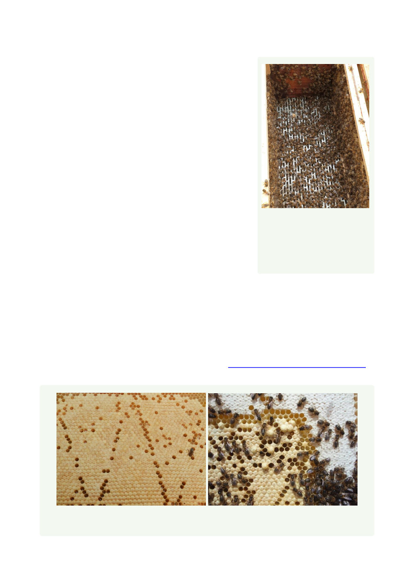

Step 8. When all the bees have been shaken into the new brood chamber, replace the
frames of foundation that were removed to create space.
Rest them into the gap and they will slowly sink down as
the bees disperse upwards from the floor onto them.
Take the queen out of the cage and place her into the
brood box if she has been caged during the process.
Step 9. Put the crown board in place
Step 10. Feed the colony with a ‘heavy’ sugar syrup. Any
supers can be placed above the feeder until the feeder is
no longer needed; then it can be placed above the queen
excluder as normal
Step 11. Inspect the colony after a week to check for
brood. When brood is present, the queen is unlikely to
abscond, remove the queen excluder and clean it
appropriately. If there is no brood present, check again in
another week. Only remove the queen excluder when
you can see eggs and larvae
Step 12. Maintain feeding until all combs are drawn out.
At this point, the end combs may need to be turned
around or moved one frame into the chamber. This is
because bees find it hard to cluster and create wax on frames adjacent to the side of the
brood box
Aftercare
After a colony has been shook swarmed, it will need to be checked regularly to ensure the
colony recovers its strength. For more detailed information on how to care for a colony
after a shook swarm, please see our fact sheet on ‘Care of colonies after a shook swarm’.
Figure 5: After a shook swarm, the colony will benefit from having clean frames and
freshly drawn-out wax. The colonies in these photos are 16 days post shook swarm
Figure 4: Once the bees have
been shaken into the new
brood box, the remaining
frames of foundation can be
carefully placed inside the box
36